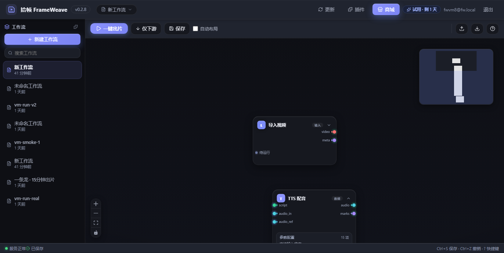

放入素材
文案、视频图片与声音进入明确的输入节点?/p>

官网展示的就是你每天使用的软件：节点画布负责组织，参数面板负责调整，时间线负责确认，插件负责扩展?/p>
把一次的操作变成可读、可修改、可复用的工作流?/p>
文案、视频图片与声音进入明确的输入节点?/p>
拖拽节点并连接关系，流程始终在画布上可见?/p>
查看状参数与时间线，运行整条链并导出作品?/p>
官方插件包把文案、视觉配音字幕和导出接入同一套节点协议?/p>
真实产品、真实节点真实输出路径?/p>打开 FrameWeave